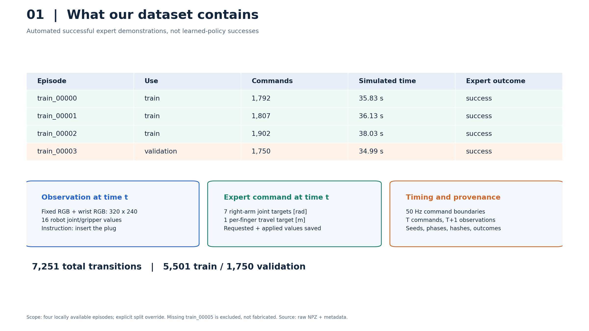
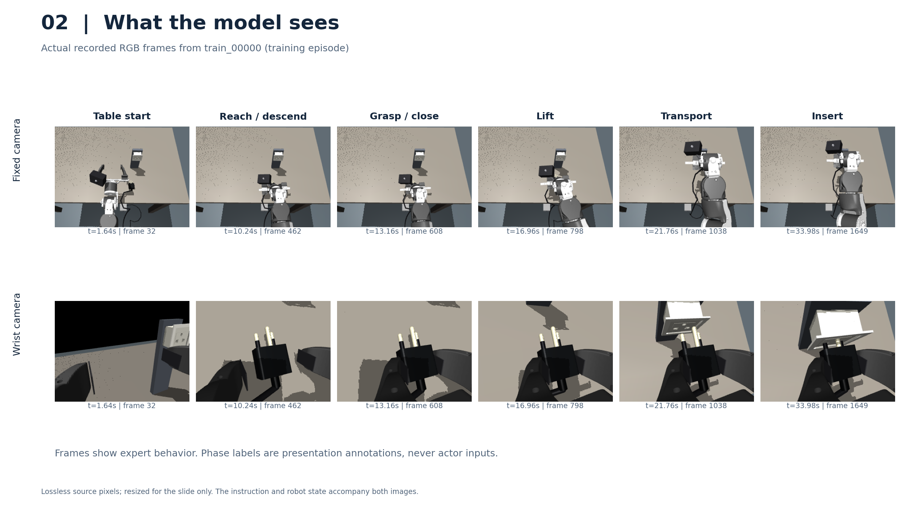
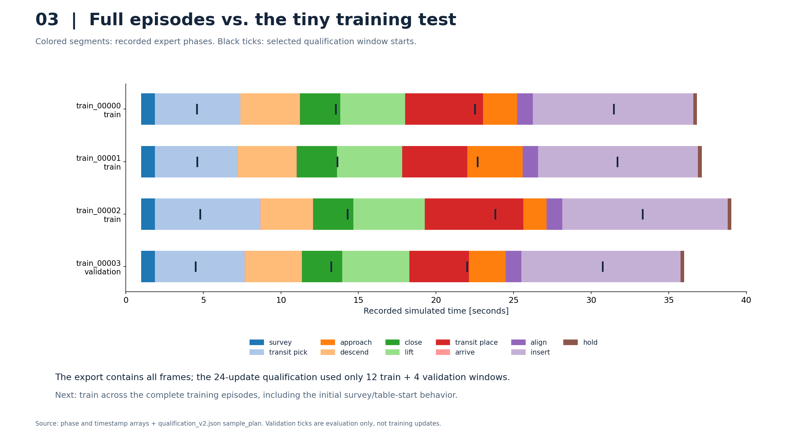
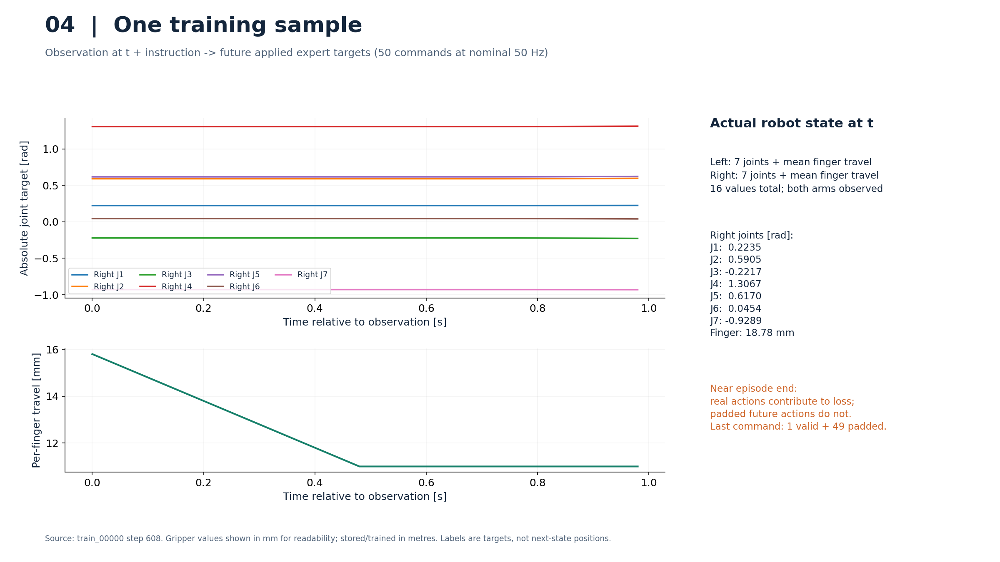
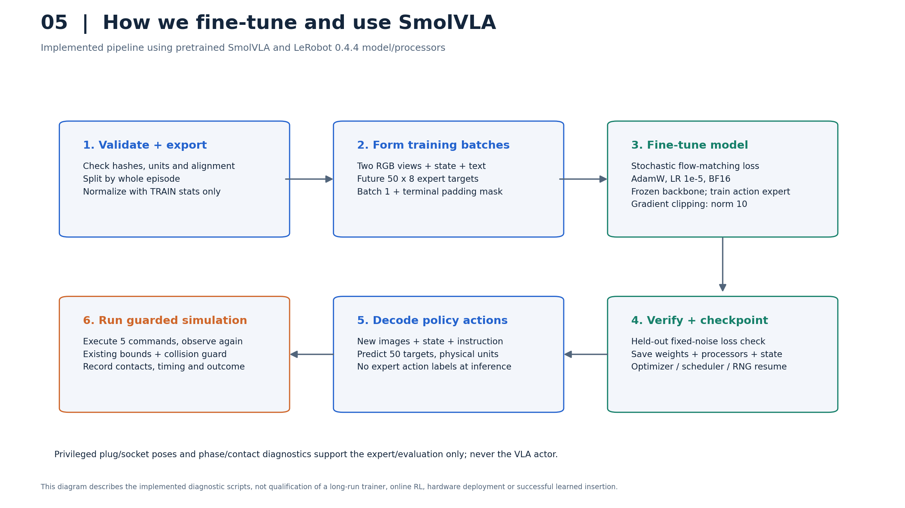
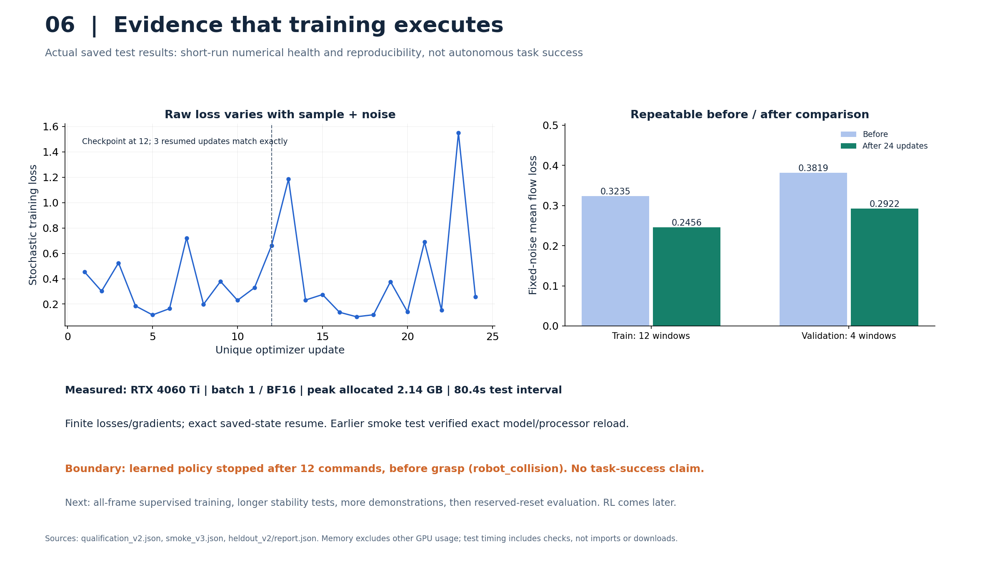

OpenArm: dataset and SmolVLA training evidence
Real recordings and saved test metrics. Expert demonstrations succeed; the tiny learned policy does not yet.
Download the six-page PDF · View provenance

Four successful full-task expert recordings; validation is a separate complete episode.

Synchronized fixed and wrist views show table start through expert insertion.

Recorded full-task phase coverage and the small subset used by the diagnostic training run.

A real 50x8 action target chunk, robot-state mapping and terminal padding convention.

Actual data-to-training-to-guarded-simulation workflow, with separate expert labels and actor inputs.

Measured stochastic loss, held-out loss improvement, memory and reproducibility, with the unsuccessful rollout disclosed.